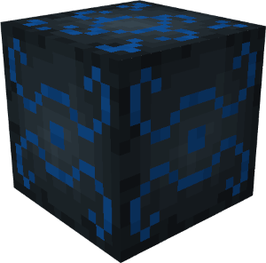
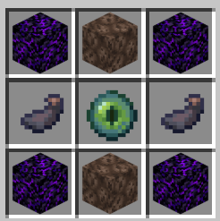
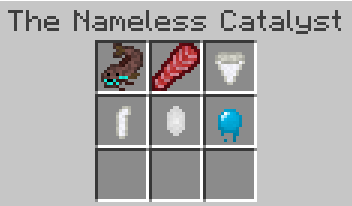

The Nameless Depth is a highly difficult boss. It has a 5 out of 5 star rating in terms of difficulty, so the player
or players must be well prepared in attempting to fight the boss. This page gives a detailed explanation on how to
summon The Nameless Depth, it's lore, the summoning ritual, and what to expect when fighting it (although it is hidden
initially to avoid any spoilers).
Lore
There exists a being, forgotten by time. It's beginning is unknown, and it's fate is yet to be revealed. It exists
outside of our realm, trapped, longing for release. This being terrorized the ocean long ago, before history was ever
written or might have even existed. Tread lightly, as encountering this beast will result in certain death.
Summoning The Nameless Depth
In order to summon The Nameless Depth, the player must perform a "ritual" to release it. The player must craft the
Nameless Catalyst and place specific Blue Depth's mob drops inside it to conjure the beast.
The Nameless Catalyst

In order to summon the Nameless Depth, the player must craft the Nameless Catalyst in order to place the needed items
inside and trigger the ritual. To obtain the Nameless Catalyst, the player can craft it using a crafting table. The
player must gather:
Crying Obsidian (4)
Soul Sand (2)
Ink Sacs (2)
Eye of Ender (1)
Then in the crafting table, the player can craft the Nameless Catalyst using this crafting pattern:

After crafting the Nameless Catalyst, you must collect certain mob drops for the Blue Depth's exclusive creatures.
The list of drops you need are as follows:
After collecting those items, you can then perform the ritual for summoning the Nameless Depth.
Ritual Details
After crafting the Nameless Catalyst and the item drops from certain mobs, you now have everything you need to summon
the Nameless Depth. In order to summon the boss, you must place all the items into the Nameless Catalyst, the order
in which you place the items does not matter, so long as all the items are stored inside the catalyst. An example is
shown as so:

However, even after placing the items, the Nameless Depth isn't guaranteed to summon unless the player has placed the
block under certain conditions. The Catalyst itself will relay whether certain conditions haven't been met once all
the items are placed inside. However, the conditions are also listed down below.
The Nameless Catalyst must be placed:
In an ocean biome
At y level 45 or below (You can check what your coordinates are by using F3 by default)
Completely submerged in water
IMPORTANT NOTE:
When you place perform the ritual it is important that the surrounding area does not have an important structures
you've built. An important example includes conduit structure that gives you Conduit Power. If you perform the ritual
too close to your important structures, they will be DESTROYED immediately. As a safe rule of thumb, make sure the
ritual is performed at least 10 blocks away from any important structures.
Boss Details
It is recommended that you go in blind during the fight with the Nameless Catalyst, since that was the original intent
when the boss was created. However, if you wanna be lame and know everything about the boss fight, I won't stop you.
The details are originally hidden to avoid spoiling the fight, if you would like to have it spoiled and ruin the
surprise, click the button below.
Boss Intro
When the ritual is successfully triggered, all players who are neither in creative or spectator mode will have
their gamemode changed to adventure mode, preventing them from being able to place blocks. All blocks nearby will
be replaced by water, and and the catalyst will disappear. What is replaced in the catalyst's place is the invulnerable
The Nameless Harbinger. The Harbinger takes the form of a glow squid and will
remain fixed in place, spinning around with a glowing effect. Upon the Harbinger's arrival, all nearby players
will receive blindness for 2 seconds.
The Harbinger will spin around and remain for about 26 seconds. During this time, players will receive blindness
and slowness for 2 seconds every 3 seconds. When the player's receive this effect, the Harbinger will emit a faint
heartbeat and soul particles.
Once 26 seconds have elapsed, the Harbinger will erupt in an explosion, and out of the dust the Nameless Depth
will finally be summoned, immediately ready to attack any nearby victim. All players in adventure mode will have
their gamemode's set back to survival mode.
Boss Fight
As stated in most of the material in Blue Depths, the Nameless Depth is an endgame boss that scales in difficulty
to the amount of players attempting to fight it. As such it is recommended that players are well prepared in the
gear they bring, whether it be healing items, potions, armor, weapons, etc. The boss will also ensure that you
can't just camp around, you are going to need to be very active and moving around to avoid being killed.
Player-based Scaling
When it comes to how the boss scales to player count, it is actually very simple. The boss's health points and
super attack frequency is adjusted based on the amount of players close to it when it initially spawns after
the Harbinger explodes. The health points and attack frequency increases per player present, but it stops
adjusting after 4 players are detected. That is not to say more than 4 players can't fight it, all what is being
said is that the scaling stops at that player count. It is also important to realize that even if multiple players
die and only one player is fighting the boss at a given time, it's max health and attack frequency will remain the
same, so it is important that your allies can get back on the battle field as soon as possible.
Details on how the health adjusts can be found on the info box to the right, and the attack frequency is elaborated
further down.
Super Attacks
The Nameless Depth can not only perform normal attacks, but it can also launch special attacks called Super
Attacks. Below gives details on each super attack and their frequencies. All attacks only affect players.
Also note that after every super attack (with the exception of Surface Punisher) the boss will update it's current
target to the nearest player.
Super Attack Details
Bubble Mine
The Bubble Mine is a super attack that summons a burst of aquatic fiery bubbles at each player's location. When
these bubbles are summon, a special sound plays that alerts the player that the mine has been summoned. When this
occurs, the player only has 4 seconds to move out of the way, or else they will be faced an explosion that can
deal about 11 to 32 hearts of damage (depending on the difficulty the game is set to) and be hit with the Slowness
II effect for 5 seconds if the player is within a 5 block radius of the explosion.
Bubble Wave
The Bubble Wave is a powerful projectile attack that sends a large wall of bubbles aimed at the closest player from
the boss on initial lauch. It pierces through blocks and won't stop until it reached the maximum travel distance it
can reach, meaning multiple players can be hit with the wave. Below are the stats for the wave:
Attack Length and Width: 6.845 x 3.6 blocks (approximately)
Attack Type: Projectile
Stops at: Nothing
Attack damage: 25 HP (12.5 Hearts)
Attack Debuffs: Slowness II (8 seconds)
Projectile top distance: 64 blocks
Projectile speed: 5 blocks per second
Ink Cloud
The Ink Cloud is a lingering area of effect attack. When the boss shoots the ink cloud, it will shoot it out 3
blocks in front of where it is facing. Below are the stats for the Ink Cloud:
Attack Type: Lingering Area of Effect
Attack Duration: 8 seconds
Area of Effect Radius: 6 blocks
Debuffs to the player:
Blindness (6 seconds)
Wither II (6 seconds)
Weakness I (6 seconds)
Please note that the debuffs the Ink Cloud applies to the player will be applied every second that the player
is within the radius of the Ink Cloud, so it is best that you try and leave the cloud in order to escape the
constant debuffs.
Vassal Grab
The Vassal Grab is the most unique (and probably scariest) super attack that the Nameless Depth can launch.
When the Nameless Depth launches this attack, it will shoot out a small red creature that will target a random
player close by. When the vassal (the red creature) locks on and targets a player, it will follow the player around
until it can get close enough to grab the player. Once the vassal grabs/latches on to the targeted player, it will
deal damage and drag the player to the Nameless Depth, once the vassal returns to the Nameless Depth, it will
immediately dissipate and deal one last bit of damage to the player.
If a player is targeted by the vassal, the player is not doomed. If the vassal get's hit with any attack while it
is chasing the player, it will die immediately, freeing the player from it's curse. However, if the vassal manages
to latch on to the player before it can be killed, it will not be able to die. If at any point the targeted player
dies either while the vassal is chasing the player or while the player is being dragged, the vassal will die
immediately. The vassal does not have a fixed duration for how long it will chase the player, it will always chase
the player until either the player dies, the vassal dies, or another Vassal Grab is launched by the Nameless
Depth.
Below shows the stats for the Vassal Grab attack:
Attack Radius: 1 block
Attack Type: Projectile
Stops at: Nothing
Attack damage: 5 HP (2.5 Hearts) on latch and return
Projectile top distance: Varies
Projectile speed: 5 blocks per second
Surface Punisher
Surface Punisher is a very specific super attack that is not reliant on the typical attack cooldown/cycle that the
other super attacks abide by. Surface Punisher only triggers on players who either leave the water or try to camp
outside the water. The player isn't punished immediately, instead it is a timer-based attack, meaning the player
is given some leeway to correct their behavior if they accidentally surface. If the player does not correct this
behavior, the Surface Attack will trigger, hitting the player with a modified version of the Bubble Mine and being
hit with an ink effect at their location similar to the Ink Cloud, except it is a one time "spray". The player is
given a warning that they will be hit with the punishment soon, to give the player some time to return to the water.
Once the player submerges, the timer will slowly decrement 1 second per second instead of being reset immediately.
The Surface Punisher Bubble Mine is slightly different to the regular Bubble Mine that is in the boss's attack
cycle. The only diffence is that the Mine will trigger after 3 seconds instead of 4 seconds.
The Ink Spray for the Surface Punisher is similar to the effects given by the Ink Cloud. Below are the stats for
the Ink Spray that get's summoned at the player's location:
Attack damage: 2
Debuffs to the player:
Blindness (4 seconds)
Weakness (4 seconds)
Below is a table that shows the timeline for the Surface Punishers timer:
Time (In seconds)
Event
1
Timer for Surface Punisher begins if player is out of the water.
4
Player is given a warning:
Angry sound plays
Smoke particles emit from the player
Text warning appears in the chat for the player to return to the water
7
Surface Punisher triggers on the player.
8
Surface Punisher timer continues to increment regardless if the player returns to the water.
15
Surface Punisher timer for the player resets to 0
Super Attack Frequency
As mentioned before, the Super Attack Frequency depends on the number of players attempting to fight the boss when
it is summoned. Within each attack interval, certain super attacks occur at fixed timestamps. Once the interval
reaches its reset time, the attack timer returns to 0 and the pattern repeats. The values in the table below
represent the time (in seconds) at which each super attack occurs during the current attack interval:
Super Attack
1 player
2 players
3 players
4+ players
Bubble Mine
5 seconds
4 seconds
4 seconds
3 seconds
Vassal Grab
12 seconds
30 seconds
10 seconds
26 seconds
8 seconds
21 seconds
7 seconds
18 seconds
Bubble Wave
20 seconds
17 seconds
14 seconds
12 seconds
Ink Cloud
38 seconds
32 seconds
27 seconds
23 seconds
Surface Punisher
Depends on the player
Depends on the player
Depends on the player
Depends on the player
Reset
40 seconds
34 seconds
28 seconds
24 seconds
Item Drops
Once the player(s) manage to defeat the Nameless Depth, the boss will give it's final roar and burst into souls
and ink. What is left behind are the rewards and treasure for the players. Along with that, each player (up to
4) will be awarded a new weapon: The Nameless
Staff.
There are 2 pools in the boss's loot table. The first pool only contains the Nameless Staff, which is guaranteed
to drop per player attempting to fight the boss when it is summoned, up to 4. The second pool contains treasure
items such as diamonds. When the boss dies, the second loot pool performs 2 - 3 rolls. Each roll selects one item
from the table below, meaning the boss can drop between 2 and 3 treasure items. Below shows a table of the item
drop chances:
Item
Drop Chance
Count (per roll, treasure pool)
Count (Staff pool)
The Nameless Staff
100%
N/A
1 (1 player)
2 (2 players)
3 (3 players)
4 (4+ players)
Netherite Scrap
37.5%
5 (1 - 2 players)
10 (3+ players)
N/A
Diamond
37.5%
2 (1 - 2 players)
4 (3+ players)
N/A
Netherite Ingot
25%
1
N/A
History
Development History
Datapack Version
Addition/Change
1.0.0 (Initial Release)
Added the Nameless Depth
Can only be summoned through player means
Items
Sturgeon Blocks
Blocks
The Nameless Catalyst
1.0.1
Fixed a bug where the Nameless Depth would surface on to the surface and move around.